Link to Webpage: https://cal-cs184-student.github.io/sp22-project-webpages-RupaDuggirala/proj3-1/index.html
Overview
Through this project, we were able to implement a few key components of a physical renderer by building out the underlying path-tracing algorithm. In Parts I and II, we focused upon ray-scene intersection and a bounding volume hierarchy (or BVH) acceleration structure. We focused upon creating the most foundational components of the renderer in these parts, whether it be generating camera rays or pixel samples, implementing the ray-triangle intersection algorithm as per the Moller-Trumbore method, and creating and intersecting the BVH in order to enables efficiently traverse primitives in a scene after categorizing them based on location through an optimally chosen splitPoint. In Parts III, IV, and V, we developed various illumination algorithms to produce the realistic effect of physically based lighting and materials upon our images. We first worked on direct illumination, and created two versions of direct lighting function – one with uniform hemisphere sampling and the other with importance sampling of the lights. Then, we transitioned into indirect global illumination, and estimated the total radiance by recursively calculating its value with each bounce of a ray in the specified sample direction, for which Russian Roulette was utilized for unbiased termination. Finally, we added adaptive sampling to concentrate the samples in the more “difficult” components of the image and avoid using a high number of samples per pixel.
Overall, we have found that this project was invaluable in helping us understand the nuances behind path-tracing and what it takes to render a 3D image such that the overall illumination within it is reminiscent of reality. Many of the tasks in this project involved a careful analysis of the various components within an image (ie. triangles, pixel samples, light rays), so we learned how to carefully observe the changes in each one and rendered the images many times to validate our thought process and visualize the results of our implementations! This was collectively one of our biggest takeaways from the project – we now have a greater appreciation for what it takes to visually compose a realistic image because we were able to intuitively comprehend and implement the corresponding lighting and rendering techniques.
Part 1: Ray Generation and Scene Intersection
The rendering pipeline that we built in this section of the project involved two key components: ray generation and the intersection of primitives. To generate camera rays in the generate_ray() function, we first converted the given x-y image coordinates into a 3D coordinate system by creating the vector (x, y, 1). To convert this vector into camera space and yield the correct coordinates, we found that a combined translation and scale transform was necessary. We first converted the hFov and vFov sensor parameters from degrees to radians, and calculated tan(0.5 * hFov) to be t_x and tan(0.5 * vFov) to be t_y – these were the quantities for the translation matrix. The initial 3D coordinates were then scaled by this translation matrix. To create the scale matrix, we calculated 2 * tan(0.5 * hFov) to be s_x and 2 * tan(0.5 * vFov) to be s_y. This matrix was multiplied by the output of the translation transform, and the resulting camera coordinates were the x-y coordinates of this resulting vector, as well as z = -1. We then generated the ray in the camera space, by creating a ray that was centered at (0, 0, 0) as its origin and with the camera coordinates as its direction. Finally, we transformed this ray to the world space by scaling its origin and direction with the c2w camera-to-world rotation matrix; origin was also scaled by pos, which is the camera position in the world space.
To address the intersection of primitives, we referenced the ray-triangle intersection algorithm – this will be explained in detail in the following paragraph. But at the core of this algorithm is the triangle, which is actually a primitive itself. As a result, after identifying that an intersection exists in the intersect() function, we manually set its parameters. One of these parameters is isect->primitive, which is set to “this” since the current triangle is the actual primitive that is being intersected.
Overall, the triangle intersection algorithm that we implemented consists of two methods: has_intersection() and intersect(). In both functions, we applied the Moller-Trumbore ray-triangle intersection algorithm to parametrize the position of the intersection point and the distance from the ray origin to the triangle in terms of their Barycentric coordinates. Barycentric coordinates are utilized here as their positions are invariant even after the triangle and / or ray is moved or rotated, and since this is not the case for traditional Cartesian coordinates. Not only can this parameterization be thought of as a transformation that shifts the triangle from its original world space position to the origin, the intersection point is also effectively shifted from “x-y-z” space to “t-u-v” space (in which u,v are the Barycentric coordinates and t is the distance from the ray origin to the intersection point). Since the ray was effectively parametrized by t, a valid intersection between the ray and triangle is determined by the inequality t >= 0 and the condition that t lies within the range (min_t, max_t) of the input ray. Mathematically, this results in a system of linear equations, which can be solved by calculating the determinant as per Cramer’s Rule. In our implementation, the has_intersection() function utilizes this logic to test whether an intersection between the ray and triangle exists, while the intersect() function extends it a bit further to actually record the intersection point.
The following screenshots of a few small .dae files show the outputs of our implementation, all with normal shading.


Part 2: Bounding Volume Hierarchy
We constructed a BVH (or bounding volume hierarchy) algorithm in this next section of the project, as it would serve the purpose of an acceleration structure that would allow us to partition objects during the process of ray-scene intersection much faster. To create the BVH, we first aimed to create an all-inclusive bounding box to “enclose” the list of primitives that was passed into the construct_bvh() function as input. This was done by adding each primitive’s bounding box to the all-inclusive one. We then extracted the centroid that was associated with each primitive. This was used to update the max and min values for each of the x, y, and z coordinates for each centroid (ie. minX, maxX, minY, maxY, minZ, and maxZ) if needed, and to add the current value of each coordinate to a running total in each direction (ie. totalX, totalY, totalZ). After this all-inclusive bounding box was created to “enclose” all of the primitives, we initialized a new node on the BVH binary tree.
By this point, we were able to accumulate enough information from the provided inputs in order to analyze how to split the primitives into a “left” and “right” collection for faster traversal in the future. We first identified the longest axis (between the x-, y-, and z-axes) by finding the difference between the max and min values that were calculated earlier. We knew that the final splitIndex (or the point at which the original vector of primitives was split into two) had to be the midpoint of this longest axis, but in order for this index to be accurate, we had to incorporate a sorting algorithm. Based on which axis (x, y, or z) ended up being the longest one, we calculated the splitPoint as the total coordinate value (ie. totalX, totalY, or totalZ) in that direction divided by the total number of primitives. We chose this heuristic for the splitPoint for many reasons – foremost, by choosing the total coordinate values that correspond to the longest axis, we are able to guarantee that the corresponding split of the primitives into a “left” and “right” section confers the most benefit, or that it is the most balanced. This ensures that the subsequent nodes in the BVH tree are created such that they are efficient to traverse. Additionally, we divided this total value by the total number of primitives so that the splitPoint effectively represents a weighted average of the primitives along the chosen direction.
At this point, we found that it was necessary to sort the input list of primitives so that the splitIndex could be used accurately. We used a built-in partition method and split the list into two halves, conditioned on the fact that the splitIndex was the midpoint of the longest axis. To find this, we had to analyze the centroid values (either x, y, or z) of each primitive once again. The final component of the BVH construction algorithm was the base and recursive cases. We determined that if the total number of primitives was less than or equal to the input max_leaf_size, the current BVH node should be considered as a leaf node and the recursion can stop. If not, the recursion is two-fold, in that the left and right “branches” of the current BVH node are each set to a recursive call of construct_bvh() to iterate through one partition of the list of primitives as determined by splitIndex.
The following screenshots are of 4 images (max planck, lucy, dragon, bunny) of large .dae files with normal shading. These have a lot of triangles and therefore would not be feasible to render if not for BVH acceleration.
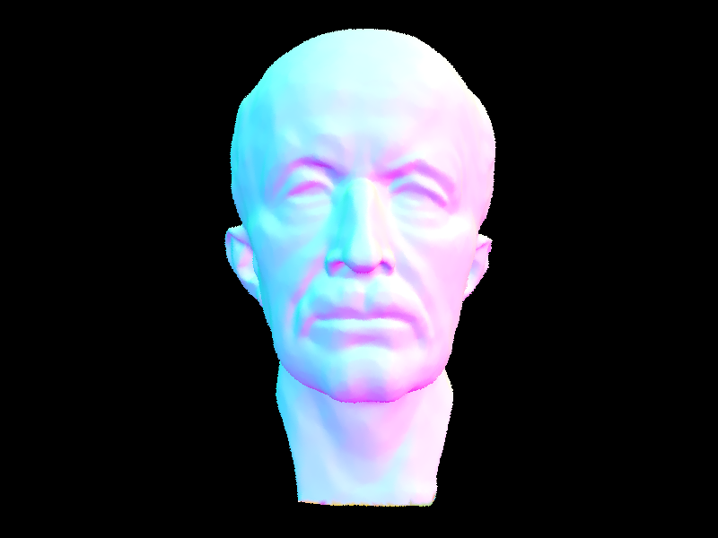 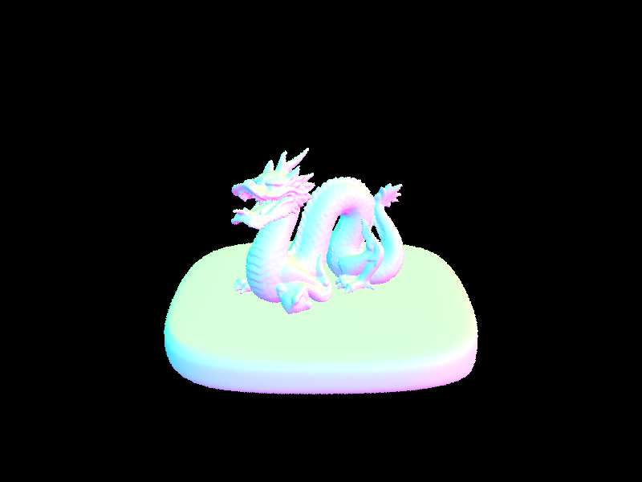 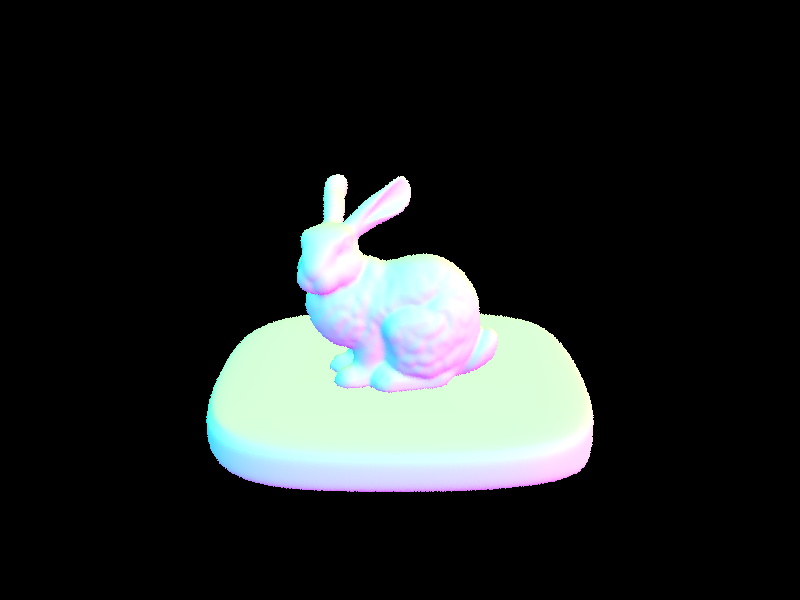 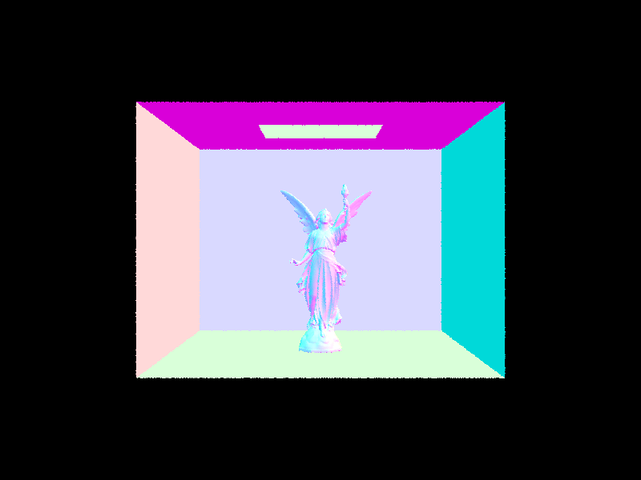We then ran a few experiments to compare rendering times on a few scenes that had moderately complex geometries. Foremost, we chose cow.dae. To render this scene without BVH acceleration, it took 49.3564 s. To render this scene with BVH acceleration, it only took 0.7565 s. Next, we chose teapot.dae. To render this scene without BVH acceleration, it took 19.8123 s. To render this scene with BVH acceleration, it only took 0.5276 s. Finally, we chose beetle.dae. To render this scene without BVH acceleration, it took 37.8114 s. To render this scene with BVH acceleration, it only took 0.5613 s. Overall, we found that BVH acceleration drastically reduced the amount of time that it took to render these scenes; the renders without this structure varied from anywhere between roughly 20 to 50 seconds, whereas the renders with it all occurred less than 1 second (or ¾ of a second, to be more precise). This massive difference in time complexity can be attributed to the fact that the BVH algorithm enables efficient traversal of primitives in a scene, by categorizing them based on location through an optimally chosen splitPoint.
Part 3: Direct Illumination
In this section, we implemented two different types of the direct lighting function: one with uniform hemisphere sampling, and the other with importance sampling. For the estimate_direct_lighting_hemisphere() function, we first sought to estimate how much light arrived at the intersection point utilizing the Monte Carlo estimation method. This involved creating a for loop that would iterate num_samples times, as this was the total number of directions in the hemisphere that we sought to sample. In each iteration of the loop, we sampled w_j, a new sample from the hemisphereSampler. This was converted into world space using the provided object-to-world conversion matrix, and a corresponding worldRay_w_j was created to represent a new incoming ray direction in the hemisphere. We then utilized the bvh->intersect() method that we defined earlier to determine if this worldRay_w_j was created such that it could have a valid intersection; if so, we checked if the emission value of the surface material was zero, as this represented a light source. We only sought to add to the estimator sum if a new ray with its origin at hit_p pointing in the sampled direction intersects with the light source (if it exists at all) – if so, this quantity composed a numerator for the reflection equation. This numerator was divided by the denominator 1 / 2 * PI, and this value was added to the collective estimator sum. After all directions in the hemisphere were sampled (or the for loop iterated num_samples times), we scaled the estimator by 1 / num_samples, as that result represented a weighted average of all of the samples that is reminiscent of the total outgoing light, which is the final output of this equation.
For the estimate_direct_lighting_importance() function, we once again sought to estimate how much light arrived at the intersection point utilizing the Monte Carlo estimation method. In this implementation, we iterated through all of the lights in the scene using the scene->lights vector. In each iteration of the loop, we checked to see if the light was a delta light (or if it was a point light source). If so, we knew that we only needed to sample it once and directly utilized the provided sample_L() function. This returned w_i, or the sampled direction between hit_p and the light source, which we converted into object space using the provided world-to-object conversion matrix. A corresponding shadowRay was created to represent a new incoming ray direction between the hit point and the light, as this would inevitably create a shadow. Once again, we utilized the bvh->intersect() method that we defined earlier to determine if this shadowRay was created such that it could have a valid intersection, and calculated the cosine as a dot product of the angle between w_i and the Vector3D(0, 0, 1). We found that the estimator sum should only be updated if there was no intersection and if the cosine result was positive – if so, the numerator of the quantity was found as per the reflection equation, or a product of the cosine, emitted radiance from sample_L(), and the reflectance between w_out and w_i; while the denominator was the pdf as calculated by sample_L(). This quantity was calculated and added to the estimator, and subsequently to the final output L_out. On the other hand, if the light was not a delta light (or not a point light source), we had to create a for loop that would iterate ns_area_light times, as this was the total number of samples that should be taken for such a light. The process of utilizing the sample_L() function to find the emitted radiance, calculating the corresponding shadowRay, and only adding to the estimator sum if there was no intersection and if the cosine result was positive were all the same from before. The only difference in this branch of the function was that the estimator sum was scaled by 1 / ns_area_light before being added to the final output L_out, as this result represented a weighted average of all of the samples (just like with hemisphere sampling).
The following screenshots are rendered with these two implementations of the direct lighting function. The top one (for each file) is rendered with uniform hemisphere sampling, while the bottom one is rendered with importance sampling.
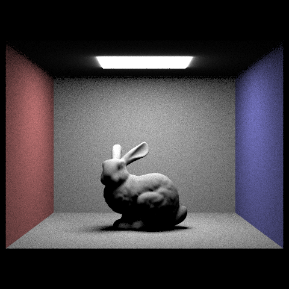 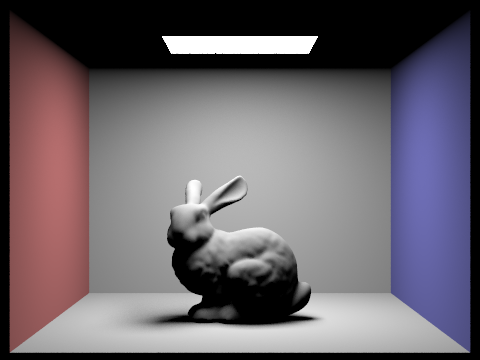 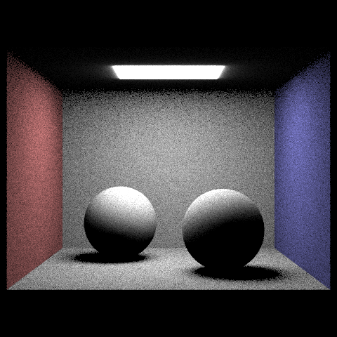 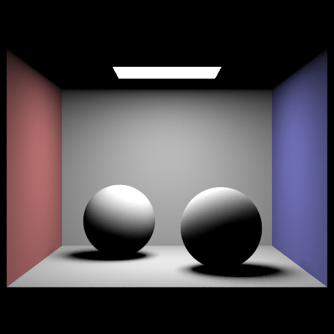In an experiment, we focused upon one particular scene, and ensured that it contained at least one area light. The following 4 screenshots demonstrate how we compared the noise levels in soft shadows when rendering with 1, 4, 16, and 64 light rays (the -l flag) and with 1 sample per pixel (the -s flag) using light sampling.
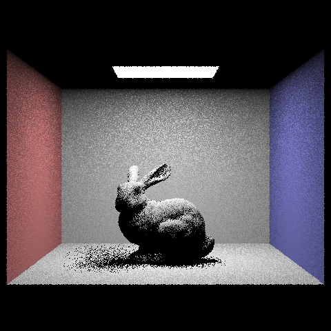 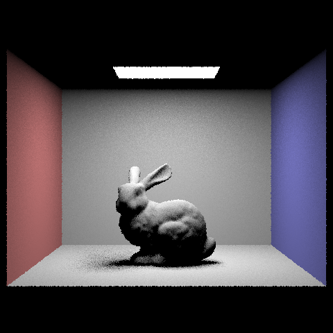
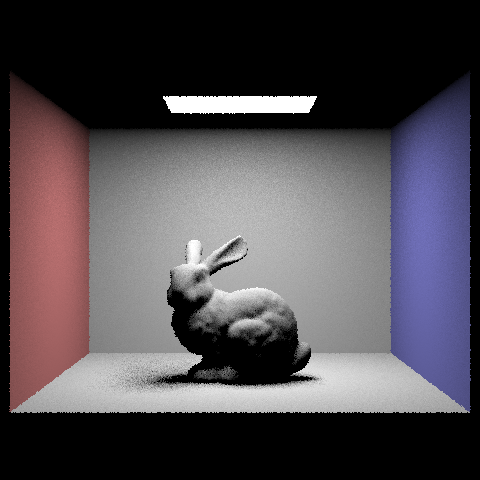
Overall, we found that the images that were rendered with uniform hemisphere sampling are a lot more coarse in texture – for both bunny.dae and CBspheres_lambertian.dae, we can visually see that the background is slightly grainy, which is created by a mix of black and either gray, red, or blue pixels (depending on the specific component). As a result, the shadows and other different types of shading that are present in these images do not appear to be as sharp. Additionally, the top light in the Cornell box appears to be slightly blurred, which means the light effectively “bleeds” into the surrounding black wall. On the other hand, we found that the images that were rendered with importance lighting sampling do not look as coarse from a texture standpoint – for both bunny.dae and CBspheres_lambertian.dae, we can visually see that the background is not grainy, and that it appears to be created entirely out of gray pixels. As a result, the shadows and other different types of shading that are present in these images appear to be sharp and well-defined. Additionally, the corners of the top light in the Cornell box here appear to be sharp, which means that the light and the black wall look more like discrete components.
Part 4: Global Illumination
Our implementation of the indirect lighting function was centered around the at_least_one_bounce_radiance() function. The base cases of this function occurred when the input ray’s depth was either 0 or 1 – if the depth was 0, we returned a zero-vector as the recursion should ideally never reach this point. If the depth was 1, we returned a function call to one_bounce_radiance(), which determined if the sample should be taken via direct hemisphere sampling and returned a function call to estimate_direct_lighting_hemisphere() if so and to estimate_direct_lighting_importance() if not. If the input ray’s depth exceeded 1, we first started off with importance sampling on the BSDF, by using the sample_f() function to calculate an incident light direction to w_out for w_in, the pdf of that sampled direction, and the reflectance in that sample. We then checked for intersections at the scene, by converting w_in into world space using the provided object-to-world conversion matrix. A corresponding sceneRay was created to represent a new incoming ray direction between the hit point and the w_in_world. Once again, we utilized the bvh->intersect() method that we defined earlier to determine if this sceneRay was created such that it could have a valid intersection. If so, we calculated the cosine as a dot product of the angle between w_in and the Vector3D(0, 0, 1). As long as this cosine result was positive and the input ray’s depth was equal to the max_ray_depth possible for indirect lighting (which was set in raytrace_pixel and checked to be > 1), we could decrement the sceneRay’s depth and recursively call the at_least_one_bounce_radiance() function on the sceneRay. As per the reflection equation, the result of this function was multiplied by the reflectance from sample_f() and the cosine to compose the numerator, which was all divided by the denominator, or the pdf from sample_f(). The resulting quantity was then added to the final output L_out.
Even if the cosine result was positive, if we had found in an earlier recursive call of the at_least_one_bounce_radiance() function that a boolean value called “terminate” was set to false, this indicated that we had to utilize Russian Roulette as an unbiased method of random termination to end this recursion. A new value for terminate was calculated in this branch, through a coin_flip() function that returned true with a probability of 0.35. After this point, everything else is the same as per the previous branch: sceneRay’s depth is decremented, the at_least_one_bounce_radiance() function is recursively called on the sceneRay, and the numerator and denominator for the reflection equation are calculated the same way. The only difference is that in the denominator, the pdf is scaled by 0.65 (or 1 - the probability of the coin_flip() function returning true). Once again, the resulting quantity was then added to the final output L_out.
The following screenshots are some images that are rendered with global (direct and indirect) illumination. We used 1024 samples per pixel!

This was found with the following command: -t 8 -s 1024 -l 16 -m 5 -r 480 360 -f spherespart4.png ../../../dae/sky/CBspheres_lambertian.dae.

This was found with the following command: -t 8 -s 1024 -l 16 -m 5 -r 480 480 -f wallepart4.png ../../../dae/sky/wall-e.dae.

This was found with the following command: -t 8 -s 1024 -l 16 -m 5 -r 480 480 -f dragonpart4.png ../../../dae/sky/dragon.dae.
We then picked one scene and compared rendered views; first with only direct illumination, then only indirect illumination. We used 1024 samples per pixel, and edited PathTracer::at_least_one_bounce_radiance(...) in our code to generate these views.

This was found with the following command: -t 8 -s 1024 -l 16 -m 5 -r 480 360 -f spherespart4directonly.png ../../../dae/sky/CBspheres_lambertian.dae.

This was found with the following command: -t 8 -s 1024 -l 16 -m 5 -r 480 360 -f spherespart4indirectonly.png ../../../dae/sky/CBspheres_lambertian.dae.
For CBbunny.dae, we then compared rendered views with max_ray_depth set to 0, 1, 2, 3, and 100 (the -m flag). We used 1024 samples per pixel!

This was found with the following command: -t 8 -s 1024 -l 16 -m 0 -r 480 360 -f bunnys1024m0.png ../../../dae/sky/CBbunny.dae.

This was found with the following command: -t 8 -s 1024 -l 16 -m 1 -r 480 360 -f bunnys1024m1.png ../../../dae/sky/CBbunny.dae.

This was found with the following command: -t 8 -s 1024 -l 16 -m 2 -r 480 360 -f bunnys1024m2.png ../../../dae/sky/CBbunny.dae.

This was found with the following command: -t 8 -s 1024 -l 16 -m 2 -r 480 360 -f bunnys1024m3.png ../../../dae/sky/CBbunny.dae.

This was found with the following command: -t 8 -s 1024 -l 16 -m 2 -r 480 360 -f bunnys1024m100.png ../../../dae/sky/CBbunny.dae.
We then picked one scene (CBunny.dae) and compared rendered views with various sample-per-pixel rates, including at least 1, 2, 4, 8, 16, 64, and 1024. We used 4 light rays!

This was found with the following command: -t 8 -s 1 -l 4 -m 4 -r 480 360 -f bunnys1l4m4.png ../../../dae/sky/CBbunny.dae.

This was found with the following command: -t 8 -s 2 -l 4 -m 4 -r 480 360 -f bunnys2l4m4.png ../../../dae/sky/CBbunny.dae.

This was found with the following command: -t 8 -s 4 -l 4 -m 4 -r 480 360 -f bunnys4l4m4.png ../../../dae/sky/CBbunny.dae.

This was found with the following command: -t 8 -s 8 -l 4 -m 4 -r 480 360 -f bunnys8l4m4.png ../../../dae/sky/CBbunny.dae.

This was found with the following command: -t 8 -s 8 -l 4 -m 4 -r 480 360 -f bunnys16l4m4.png ../../../dae/sky/CBbunny.dae.

This was found with the following command: -t 8 -s 8 -l 4 -m 4 -r 480 360 -f bunnys64l4m4.png ../../../dae/sky/CBbunny.dae.

This was found with the following command: -t 8 -s 8 -l 4 -m 4 -r 480 360 -f bunnys1024l4m4.png ../../../dae/sky/CBbunny.dae.
Part 5: Adaptive Sampling
We implemented adaptive sampling by editing the ray tracing logic in part 1.2. we set up two accumulators: s1 and s2, in order to track the sum of all the illuminance, and all the illuminance squared for convenience of later calculations. In our loop, we put a check to see if the number of samples done so far is a multiple of SamplesPerBatch. If it is, we compute the standard deviation and the mean, as well as our convergence term to check whether it is less than or equal to max tolerance * mean. If it is, then we immediately set the sample size to the buffer for visualization, set the pixel to the right radiance and break out of the loop. We have to make sure that we normalize by the right sample number, which was something we neglected on our first pass.
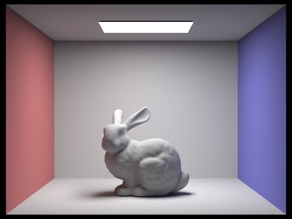 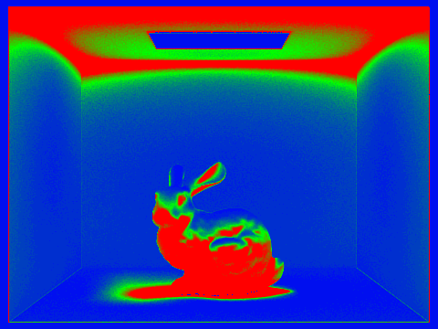This was found with the following command: -t 8 -s 2048 -a 64 0.05 -l 1 -m 5 -r 480 360 -f bunnytask5.png ../../../dae/sky/CBbunny.dae.
Conclusion
We took turns taking stabs at each section. Usually one person takes the lead and starts us off with some foundation of code. Then the other person will debug and help catch silly mistakes. It was helpful to switch off every now and then so one person doesn't get hard stuck. We also found it helpful to use github commit names descriptively and to push often.
We had some issues getting Rupa's computer to render images, so Celeste compiled most of the rendering parts for the writeup while Rupa wrote down our algorithm and thought process. Overall we are working well as a team since this is our third project together. We learnt to work around our availability and strengths, especially when it came to spec understanding and brainstorming.